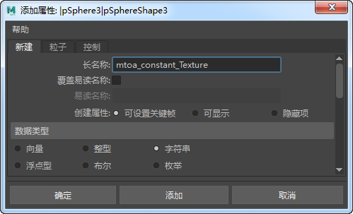
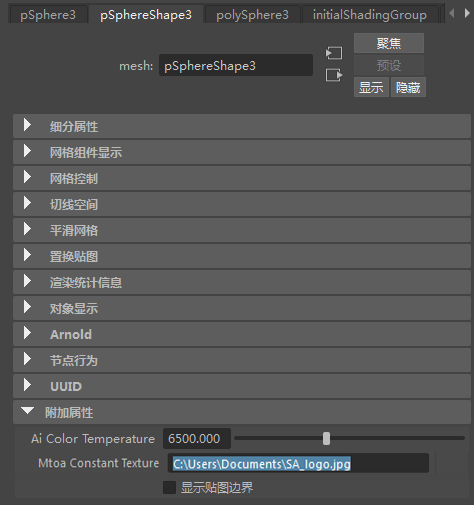
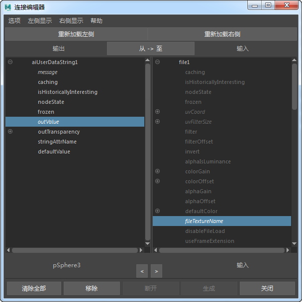
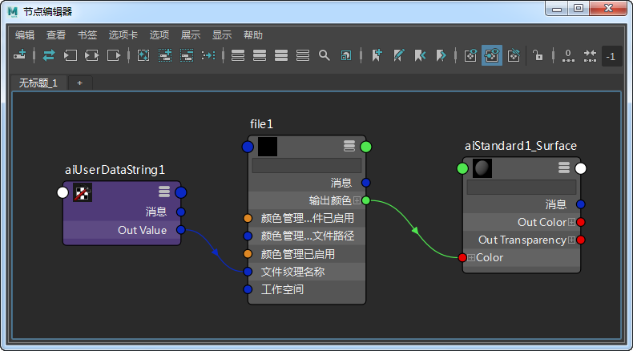
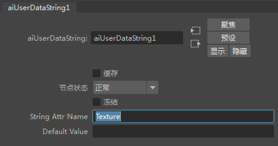
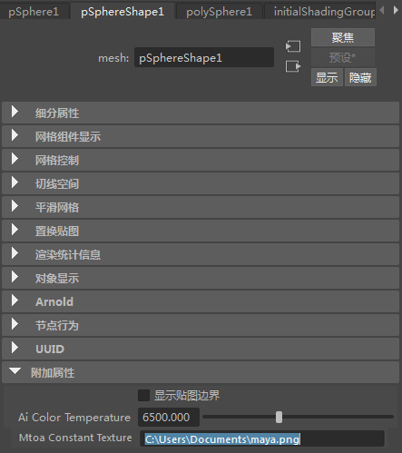

本简短教程介绍如何使用 Ai 用户数据字符串*着色器。在此示例中，多个纹理可连接到不同的对象，并且是使用同一 *standard_surface 着色器。
有关对应的 Maya 场景，请单击此处。
创建一个球体，并向形状节点（而非变换节点）添加一个附加属性。使用向下键 (pickWalkDown) 选择形状节点。
添加长名称 -“mtoa_constant_Texture”（“Texture”是我们将为 Ai 用户数据字符串节点使用的前缀，但您也可以随意命名（不要使用“name”，此名称不起作用）。将“数据类型”(Data Type)设置为“字符串”(String)。

字符串 Maya 属性

将一个 standard_surface 着色器指定给球体。将一个文件纹理连接到 base_color 属性。创建一个 Ai 用户数据字符串节点。
打开这两者的连接编辑器。将 Ai 用户数据字符串节点的 outValue 属性连接到“文件纹理”节点的 fileTextureName 属性：

着色器网络应类似下图：

Ai 用户数据字符串节点连接到文件纹理节点

